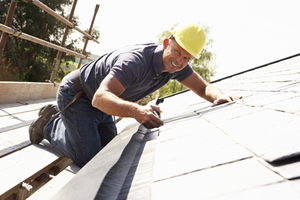

Welcome to All Weather Construction, Inc.: a Aurora Roofing Contractor
All Weather Construction, Inc. is a local Aurora roofing contractor dedicated to the evaluation, installation, and repair of residential roofs in Aurora, OR.
At All Weather Construction, Inc. we are there for you throughout the entire roofing process. From providing you with all the guidance and advice you need when selecting roofing materials to keeping you informed throughout your roofing project, we are the Aurora roofing contractor you can trust to get the job done right and according to your specifications. Our Aurora roofing contractors make sure to address the concerns and questions of our clients first and go over all the details of your project o ensure a successful completion of the work needed.
Our Aurora roofing services include new roof construction and installation, roof replacement, roof inspections, roof maintenance, roof repairs, and more. Call us today for a no-obligation consultation or to request an estimate for the cost of your Aurora roofing project.
All Weather Construction, Inc. - Aurora Roof Repairs
When it comes to fixing roof leaks, replacing shingles, and repairing storm and hail damaged roofs, All Weather Construction, Inc. is the company homeowners and businesses turn to for their Aurora roof repairs. Our team of professional Aurora roofing contractors have years of experience providing top quality roof repairs for all types of residential roofing, including roofing shingles, composite shingles, cedar shingles and flat roofing.
Whatever type of roof you have, you can rely on All Weather Construction, Inc. for your Aurora roof repairs. Call us today to request an estimate for the roofing services you need.
Aurora Roofer
When you need a reliable Aurora roofer that will provide you with quality products, amazing customer service, and a job you will be satisfied with, you need All Weather Construction, Inc.! We are one of the leading Aurora roofers in the area, and we have a large base of satisfied customers throughout the region that return to us time and again for any roofing needs they have while referring us highly to their friends, families, and coworkers.
Put your trust in our expertise as a professional Aurora roofer. Call All Weather Construction, Inc. today for all your residential or residential roofing services. You won't be disappointed!
- Aurora roofing contractor
- Aurora residential roofing
- Aurora roofing contractor
- Aurora roof replacement
- Aurora roofer
- Aurora roof repairs
- Aurora roofs
- Aurora roofing
- Aurora roofing services
- Aurora cedar shingles
- Aurora composite shingles
- Aurora roofing shingles
Aurora Roof Replacement
If your roof has suffered extensive damages, you may have no choice but to invest in Aurora roof replacement services. There are many ways you can prevent having to hire a Aurora roof replacement contractor by extending or maintaining the life of your current roof, though! Learn how to keep your roof in good condition by discovering some of the most common causes of roof damages in Aurora.
You Might Need Aurora Roof Replacement Services If Your Roof Has...
1. Poor Maintenance. It is important to regularly inspect your Aurora roof for small problems and damages and immediately make repairs. This is especially true if your roof has little or no slope. Regular inspection and maintenance will prevent small minor damage from becoming a major problem or leak.
2. Wind Damage. Over time any wind can loosen nails in roofing materials. When this happens, a moderate wind can damage the roof. Strong winds and flying debris can also damage a roof, often removing some or all of the roofing material. The best way to avoid this potential damage is to check the roofing and the insulation regularly to be sure it is securely attached to the roof deck. You should also have a secure perimeter fastener.
3. Other Weather Damage. Most roofing materials can be damaged over time by exposure to various weather conditions. If you live in an area likely to see large snow accumulations, you need to be sure the roof is adequately supported against the weight of the snow and properly sloped so the snow will not stay on the roof any longer than necessary. Aurora is prone to hailstorms, and hail can cause serious roof damage. Be sure to have a reliable Aurora roofing contractor carefully inspect your roof after every hailstorm. The sun, pollutants in the air and other chemicals in the air or in the rain can also damage roofing materials. Inspection and repair of minor damages can prevent big trouble.
4. Problems with Flashing. Because the purpose of flashing is to create a water-tight boundary between roof sections, between roofing materials and other parts of the house and between roofing materials and roof projections, problems with flashing often cause leaks. These leaks can damage the field of the roof as well as the interior of the house. Flashing problems usually happen because of either design or installation errors. Some flashing problems can also result from wind damage. Regular roof inspections of all types of flashing in all parts of the roof can catch problems early and correct them before there are major leaks.
Each of these major causes of roof damage can be minimized by regular and careful inspection for early and minor problems. Immediate attention to any flaws or damages with competent Aurora roof repairs can help you avoid major damage to your roof and prevent the need for early and costly Aurora roof replacement.